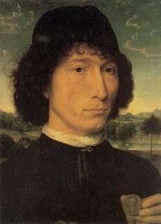

Bava Metzia 46 - Acquiring Money Though the Method of "Exchange"
Not only can coins not serve for "exchange" acquisition , but they cannot even be acquired through exchange. Thus Rav Pappa, when he wanted to transfer the ownership of 12,000 golden coins to his agent, used a method of acquisition "by dint of land," where he transferred the money together with a piece of land. Incidentally, he needed the agent to be the owner so that the people who owed him the sum would not hesitate to give the money to his agent.
Since the coin’s value can be revoked by the government, its value is not intrinsic, like that of a promissory note, and such items cannot be acquired through "exchange."
Test your knowledge of the daf